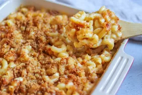

Mac and Cheese

Description
This homemade mac and cheese is topped with buttered bread crumbs for pure comfort food.
It's easy to make the cheese sauce from scratch, starting with a roux and adding milk, Cheddar, and Parmesan to make a rich,
decadent sauce that coats every nook and cranny of the noodles.
Ingridients
- Macaroni: This homemade mac and cheese starts with a box of uncooked macaroni noodles.
- Butter and flour: You'll need butter and flour to make a roux for the cheese sauce. You'll also need two tablespoons of butter for the topping.
- Milk: Use whole milk for the richest flavor and texture.
- Cheese: This baked mac and cheese recipe calls for Cheddar and Parmesan cheeses.
- Seasonings: Salt and pepper goes into the sauce, while paprika is sprinkled over the topping.
- Bread crumbs: Use store-bought dried bread crumbs or make your own at home.